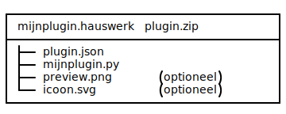
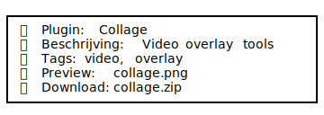

🪝 Documentatie
🌐 Beschikbare talen: Nederlands | English | Deutsch | Français | 中文

Welkom in de documentatie van Hauswerk Plugins. Deze pagina legt uit hoe de Supabase-pluginstructuur werkt, hoe je zelf plugins maakt, uploadt, en ze zichtbaar maakt in de Plugin Browser van Hauswerk. Of je nu een ontwikkelaar bent of gewoon een enthousiaste gebruiker, je vindt hier alle info om mee te bouwen aan een modulair ecosysteem.
Alle plugins worden dynamisch geladen vanuit Supabase. Hierdoor zijn wijzigingen, nieuwe uploads en updates direct beschikbaar in de Plugin Store-tab binnen de Hauswerk-app, zonder handmatig het pluginoverzicht te hoeven bijwerken.
📦 Wat bevat Supabase?
- ✅ Één
.pybestand met eenQWidgetsubclass - ✅ Een
plugin.jsonbestand met metadata (entry, class, tags, etc.) - ✅ Een
.svgicoon (optioneel) - ✅
preview.pngvoor visuele weergave (optioneel) - ✅ SHA256 checksum + automatische validatie
- ✅ Downloadbare
.hauswerk-plugin.zip
{
"name": "Collage",
"entry": "collage.py",
"class": "CollageWidget",
"tags": ["video", "overlay"],
"verified": true,
"slug": "collage",
"icon": "collage.svg",
"preview": "collage.png",
"download_url": "https://izlcnpelomuuwxijnnuh.supabase.co/storage/v1/object/public/hauswerk.unofficial/collage.hauswerk-plugin.zip"
}🚀 Hoe gebruik ik Supabase plugins?
De Hauswerk GUI haalt live de pluginlijst op via de Supabase API. Je hoeft enkel de Plugin Store te openen binnen de applicatie — de rest gebeurt vanzelf.
plugin_browser.js regelt het ophalen, weergeven, en downloaden van plugins in de GUI.
✅ Offline cache-optie is ook beschikbaar voor beperkte toegang zonder internet.
🧪 Bijdragen aan Supabase Store
Er zijn twee hoofdstructuren waarin je je plugin kunt publiceren:
🔐 Upload naar official (via review)
- Compleet werkende plugin
- Validatie door maintainer
- Metadata + preview vereist
Wordt gemarkeerd als verified: true en verschijnt bovenaan in zoekresultaten.
📤 Zelf uploaden via Python
Gebruik supabase-py + hauswerk-utils of de ingebouwde uploader in de GUI:
python upload_plugin_to_supabase.py \
--bucket hauswerk.unofficial \
--file mijnplugin.hauswerk-plugin.zipDe uploader voert o.a. deze stappen uit:
- Valideert
plugin.jsoninhoud - Genereert automatisch een
slug, SHA256 en metadata - Voegt
preview.pngtoe als aanwezig - Uploadt veilig naar Supabase Storage
💡 Eigen store opzetten?
In de GUI kun je alternatieve bronnen toevoegen, zoals je eigen Supabase project of een JSON endpoint. Zolang het JSON-formaat gelijk blijft, werkt het direct.
🧰 Plugin ZIP Structuur
📦 mijnplugin.hauswerk-plugin.zip
├── plugin.json
├── mijnplugin.py
├── preview.png # optioneel
├── icoon.svg # optioneelplugin.json bevat bijvoorbeeld:
{
"name": "Mijn Plugin",
"entry": "mijnplugin.py",
"class": "MijnPluginWidget",
"tags": ["audio", "fx"],
"verified": false
}🛡️ Automatische validatie
- Controle op verplichte velden
- Controle of
.py-bestand en class overeenkomen met metadata - Bestaat de preview/icoon daadwerkelijk?
- ZIP-structuur compleet en correct
📡 Supabase Plugin Browser in GUI
Hauswerk gebruikt een live JSON API request om plugins weer te geven:
fetch("https://izlcnpelomuuwxijnnuh.supabase.co/rest/v1/plugins")Elke plugin wordt weergegeven met titel, tags, preview en downloadknop. Er is visuele feedback, validatie en filteropties voor officiële/unofficial plugins.
🤝 Contributie
- Draag een officiële plugin aan via GitHub of direct contact.
- Liever laagdrempelig? Upload gewoon naar
hauswerk.unofficial.
📫 Contact / Hulp
Open een issue op github.com/michligtenberg2/Hauswerk of gebruik de uploader in de app.
🛠️ by M. Ligtenberg